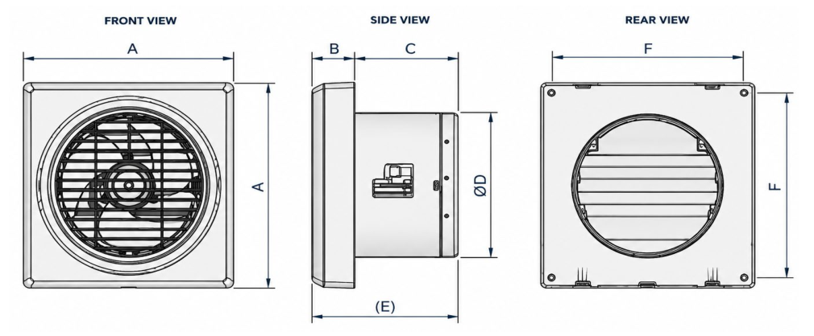
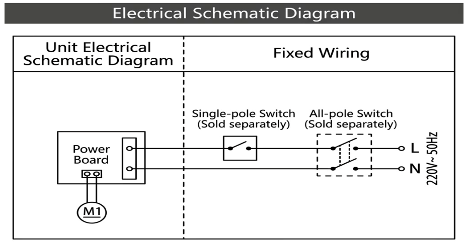
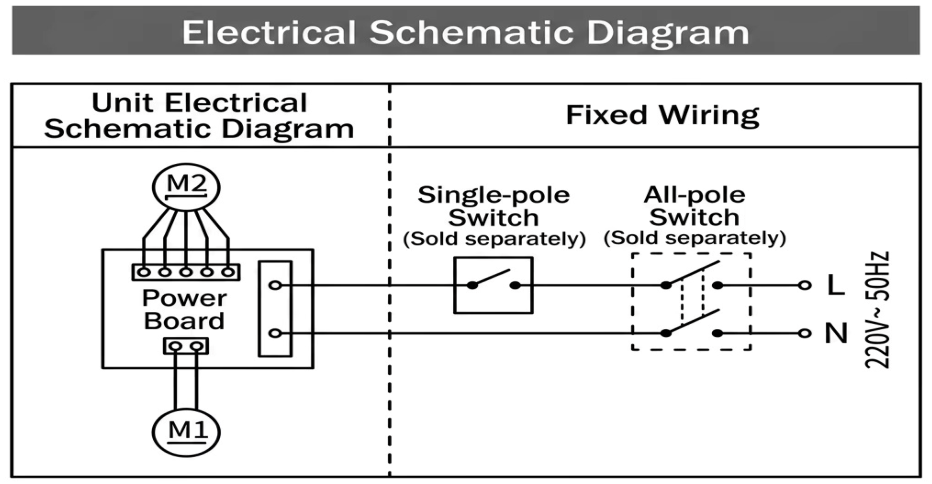

Window Fan
PWF Series — Wall / Window Extract Fans
BLDC extract fans for wall and window installation, with 5 W rated power and a nominal 150 mm diameter. Available with an automatic shutter or an electrical front shutter with a rear automatic shutter.
Contact ProdigyTechnical Specifications
Source: Prodigy PWF Technical Data Sheet — Performance Parameters.
| Model | Power (W) | Airflow (m³/h) | Pressure (Pa) | Diameter (mm) | Noise (dB) | Shutter |
|---|---|---|---|---|---|---|
| PWF-150DC-AS | 5 | 180 | 25 | 150 | 44.6 | Automatic shutter |
| PWF-150DC-ES | 5 | 180 | 25 | 150 | 44.6 | Electrical front + rear automatic shutter |
Both models: BLDC motor with two ball bearings. Airflow and pressure are separate published ratings; confirm the required operating point for the installation.
Overall Dimensions
Dimensions in millimetres, from the original Prodigy PWF data sheet.

| Model | A (mm) | B (mm) | C (mm) | D (mm) | E (mm) | F (mm) |
|---|---|---|---|---|---|---|
| PWF-150DC-AS | 210 | 44 | 95 | 148 | 139 | 189 |
| PWF-150DC-ES | 210 | 53 | 95 | 148 | 148 | 189 |
Includes technical specifications, dimensions and wiring instructions for both models.
Wiring Diagrams
Original electrical schematics from the Prodigy PWF data sheet. Select the diagram matching the model on the unit nameplate.
PWF-150DC-AS
Automatic shutter{kind=link}

PWF-150DC-ES
Electrical front + rear automatic shutter{kind=link}

Select either diagram to view it at full size.